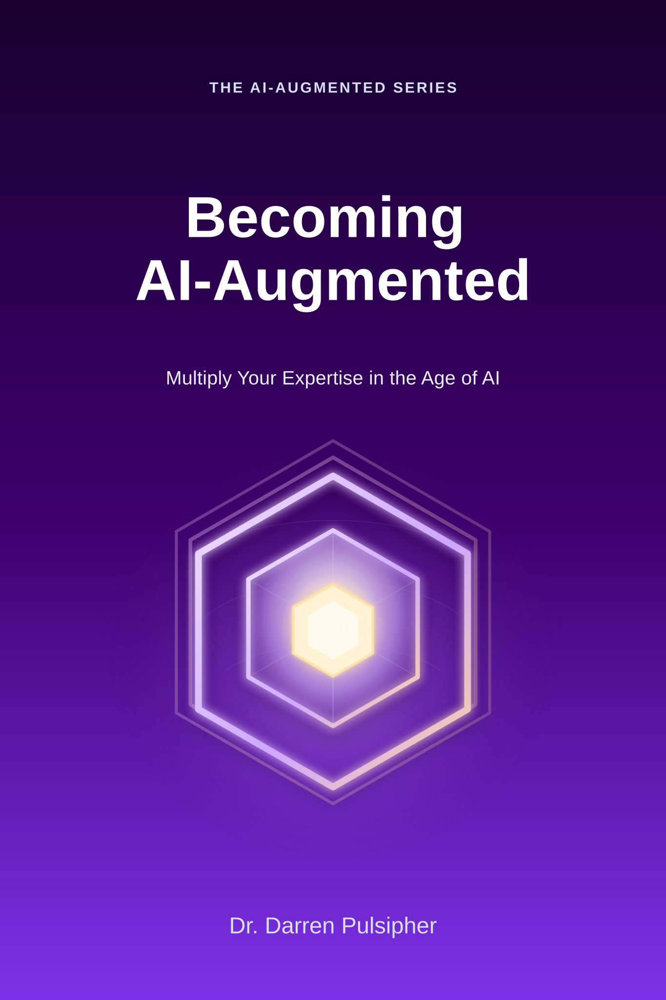

Student
2026 IUC Collaborative Initiatives Summit
AI-Augmented Education
You heard Darren today. What do you want to do next?
Practical frameworks for helping people, teams, and universities use AI effectively while preserving human judgment, accountability, creativity, and expertise.
Columbus, Ohio · September 22, 2026Continue the conversation from today's keynote or breakout.
Keynote: Becoming AI-Augmented: Expanding Human Capability in the Age of AI
Breakout: Delivering Reliable and Defensible Work with AI



Welcome, IUC attendees
Continue the work from today's keynote
Explore the AI-Augmented Education framework, select your role, and choose a practical next step.
Choose your role
Where do you fit in AI-Augmented Education?
Choose the path that matches your responsibility, then use the framework and assessment to decide what to do next.
Teacher
Design learning experiences that build capability instead of dependency.
Explore the Teacher PathEducation Leader
Build institutional AI capability across academics, operations, governance, research, and student success.
Explore the Education Leader PathContinue from IUC
Choose your next step
Start with free learning, apply the framework to real work, or bring guided support to your team or institution. The shop delivers Learn assets and paid Apply products; Augment starts with a conversation.
01 · Learn
Understand the ideas
Free · Delivered through the shop
Get the keynote and breakout guides, explore the framework, and find the role and maturity stage that fit your work.
Get the Free Guides02 · Apply
Put it into practice
Paid · Practical tools through the shop
Use a Reliable and Defensible Work kit, team toolkit, or organization playbook with a real workflow or decision.
Browse Application Toolkits03 · Augment
Build with guided support
Paid · Briefings, workshops, and assessments
Move from discussion to action with an executive briefing, leadership workshop, readiness assessment, keynote, or institutional engagement.
Explore Augmentation ServicesChoose your scope next: Learn, Apply, and Augment describe the level of engagement. Individual, Team, and Organization describe the scope of the work. Use both to find the right next step.
Individual · Team · Organization
The same system, at the scope you lead
The books and tools form a progression from individual capability, to shared team practice, to organization-wide change.
Individual
Becoming AI-Augmented
How do I work differently with AI?
Explore the bookTeam
AI-Augmented Teams
How do we make AI part of the way our team works?
Explore the bookOrganization
AI-Augmented Organizations
How do we scale AI safely and deliberately across the enterprise?
Explore the bookThe AI-Augmented journey
Don't start with tools. Start with capability.
Explore the repeatable framework underneath the keynote, then use it to move from awareness to reliable practice.
Put this into practice
Choose your next useful resource
These are the IUC follow-up assets. Their category tells you what happens next.
Learn · Free
I attended the keynote
Get the Becoming AI-Augmented Quick Start Guide and start changing one workflow.
Apply · Paid
I attended the breakout
Use the Reliable and Defensible AI Workflow Guide to make grounding, validation, and ownership visible.
Apply · Paid
I lead a team
Turn individual experiments into shared team practice with the AI-Augmented Team Toolkit.
Augment · Guided
I lead a university or organization
Build governance and capability that can scale across the enterprise with guided support.
Higher education
Building the AI-Augmented University
Universities bring together educators, researchers, administrators, technologists, students, and institutional leaders with different needs and risks. A common capability framework lets each community adopt AI appropriately for its mission.
Institutional journey
Build an AI-Augmented university step by step
Use this institutional path to move from a shared question to measured, governed capability. It complements AAOS by describing the larger education change journey around the operating method.
- DiscoverName the opportunity.
- AssessUnderstand current capability.
- DiagnoseMap workflows and risks.
- PrioritizeChoose where to begin.
- PilotTest a bounded use case.
- GovernSet ownership and controls.
- MeasureReview outcomes and trust.
- ScaleExtend proven practice.
- AugmentKeep improving capability.
Ways I can work with your institution
Move from AI discussion to organizational action
Executive Briefing
60–90 minutes for presidents, CIOs, provosts, cabinet members, or boards.
AI-Augmented Leadership Workshop
A working session for leadership teams to choose practical next steps.
AI Readiness Assessment
Identify where your organization is today, where AI can create value, and what capabilities need development.
Keynotes & Workshops
Bring the AI-Augmented message to your university, association, retreat, or conference.
Bring Darren to Your Organization
Let's talk about the people, workflows, and decisions that matter most to your institution.
Book a ConversationYour guide
Dr. Darren Pulsipher
Enterprise Architect · Vanderbilt Professor · Author · Researcher · Host of Embracing Digital Transformation
Helping government, higher education, and commercial organizations turn emerging technology into operational capability.
Education in practice
Experience grounded in higher education work
AI-Augmented Education connects research, leadership conversations, and practical workshops to the realities of institutional change.
Institutional reach
30+ organizations
The broader AI-Augmented work includes higher-education institutions adopting the framework.
Leadership sessions
Executive and campus conversations
Briefings and workshops help leaders connect AI opportunity, governance, capability, and mission.
IUC 2026
Keynote and breakout
The IUC Collaborative Initiatives Summit provides a practical starting point for continuing the conversation about AI-Augmented work.
The AI-Augmented series
Becoming → Teams → Organizations
A practical progression from improving individual capability, to building effective teams, to transforming the enterprise.
Stay connected
Keep building practical capability
Watch the videos, listen to Embracing Digital Transformation, or join the AI-Augmented movement.